读图
橙色框 = 你要看 / 要点的地方
灰色块是打码的密钥或无关信息。截图里的文字和你屏幕上的不完全一样很正常：AI 每次生成的内容都会有差别。命令框、提示词框右上角都有「复制」按钮，点一下就能去粘贴。
本手册的截图全部来自 2026-10-17 按「每人 fork 一份」的方式从头到尾重跑一遍的真实环境：fork、Codespace、VS Code、GitHub Actions、Copilot Studio 都是当天的界面。每一步按同一个格式写：做什么 → 截图 → 应该看到；每个环节结束有一张复盘卡，回答「用了什么功能 / 它替我做了什么 / 对项目意味着什么」。
一句话：每周自动收集行业新闻 → 整理成周报 → 一键做成汇报 PPT → 业务同事在 Copilot Studio 里问一句就能拿到。今天的每一步，要么是给这条流水线装一个零件，要么是把它改成你们团队想要的样子。
想看每个代码文件之间怎么配合，打开 架构图（单独页面），讲师讲解时可以投屏用。
| 步骤 | 用大白话说：这一步在干什么 | 做完你手里多了什么 | 放在全局里看 |
|---|---|---|---|
| 准备 · 搭工作台 | |||
| 课前准备 | 复制一份自己的项目（fork），办好一把「钥匙」（令牌） | 自己的仓库、Codespace、令牌 | 后面所有操作都在你自己的副本上，互不影响，弄坏了也不怕 |
| 开场 0.1~0.4 | 打开浏览器里装好一切的 VS Code（Codespace），填令牌 | 能用 Copilot 的开发环境，外加一把 API 密钥 | 这是工作台；API 密钥是 Lab-03 里 Studio 调用你服务的「门禁卡」 |
| 热身 · 学会和 Copilot 配合 | |||
| 热身 1 | 让 Copilot 读整个项目，讲给你听 | 知道三个 Lab 怎么串起来 | 先认地图，再上路 |
| 热身 2 | 选中一段代码，让 Copilot 解释 | 看懂周报网页是怎么显示出来的 | 看不懂的代码，随时可以让它讲 |
| 热身 3 | 一句话让 Copilot 给网页加一个开关 | 周报网页多了「只看高影响」 | 体验 vibe coding：描述 → 生成 → 看效果 → 再描述 |
| 热身 4 | 把团队规矩写进 copilot-instructions.md | Copilot 写代码时会按你们的规矩来 | 规矩写一次全组生效，但结果还要自己验收 |
| Lab-01 · 流水线第一段：新闻 → 周报 | |||
| Lab-01 第 1 步 | 输入一个斜杠命令，让智能体抓新闻、写周报 | 一份本周行业洞察周报（网页） | 第一段跑起来了 |
| Lab-01 第 2 步 | 只改 focus.md，加一个你负责的行业 | 周报里多了你的行业 | 不改代码，智能体就会关注你关心的事 |
| Lab-01 第 3 步 | 让 Copilot 写一个新工具「客户雷达」 | 智能体能按客户名查本周动态 | 给智能体加本事，就是写一个它能调用的函数 |
| Lab-01 第 4 步 | 推到 GitHub，让它在云端自动跑一次 | 你 fork 里一个待审核的周报 PR | 从「我自己用」变成「每周一自动给全组用」，结果经人审核才进主干 |
| Lab-02 · 流水线第二段：周报 → PPT | |||
| Lab-02 第 1 步 | 在 Chat 里让 Copilot 按 Skill 把周报做成 PPT | 一份可编辑的 .pptx | 第二段跑起来了 |
| Lab-02 第 2 步 | 把团队汇报规范写进 SKILL.md | 之后每份 PPT 都带着这条规范 | 规范改一处，Chat、网页、API 同时生效 |
| Lab-02 第 3 步 | 让 Copilot 给网页加「公司品牌风」 | 一种新的 PPT 风格 | 按你们公司的视觉出 PPT |
| Lab-02 第 4 步 | 启动网页服务，在网页上生成 PPT | 一个网页 + 一套 API | 有了 API，Studio 才能调用它，这是 Lab-03 的前提 |
| Lab-03 · 交付给业务：一句话拿到洞察和 PPT | |||
| Lab-03 第 1 步 | 把服务端口设为公开，跑一次自检 | 一个公网地址，确认密钥能用 | 让微软云上的 Studio 能访问你的 Codespace |
| Lab-03 第 2 步 | 改 openapi.yaml 里的地址和名字 | 一份「你的服务在哪、有哪几个功能」的说明书 | Studio 靠它知道能调用哪些功能 |
| Lab-03 第 3 步 | 在 Studio 建智能体、粘贴指令 | 一个「业务汇报助手」 | 业务同事真正对话的入口 |
| Lab-03 第 4 步 | 导入工具、建连接（填 API 密钥） | 智能体能调用你的 4 个功能 | 把 Studio 和你的服务接上线 |
| Lab-03 第 5 步 | 用几句话测试 | 洞察和 PPT 一次拿到 | 整条流水线跑通 |
| Lab-03 第 6 步 | 改一句指令，看回答怎么变 | 回答多一行「由哪个团队跟进」 | 业务人员自己就能调智能体的行为 |
| 课后 | |||
| 课后清理 | 把公开的、花钱的、带权限的东西收掉 | 干净的账号 | 用完就关，是用云服务的好习惯 |
/industry-insight，它就照着干活。灰色块是打码的密钥或无关信息。截图里的文字和你屏幕上的不完全一样很正常：AI 每次生成的内容都会有差别。命令框、提示词框右上角都有「复制」按钮，点一下就能去粘贴。
看到「Run bash command?」先读一遍命令再点 Allow。调 MCP 工具时可以点 Allow in this Session，本次对话不再问。
Agent 改完文件后，Chat 底部会出现「N files changed · Keep · Undo」。看效果满意再点 Keep，不满意 Undo 后重新描述。
每人用自己的仓库、自己的 Codespace、自己的 Copilot 额度。建议上课前一天做完，第一次创建 Codespace 要 3~8 分钟
| 准备什么 | 怎么做 / 怎么检查 |
|---|---|
| 1. GitHub 账号 + Copilot 席位 | 登录 github.com/copilot 能正常对话 |
| 2. Fork 课程仓库 | 打开 atlascopco-Lab/atlas-copilot-agent-labs → 右上角 Fork → Owner 选你自己 → 取消勾选「Copy the main branch only」（卡住时要用到参考答案分支）→ Create fork。之后所有操作都在 <你的用户名>/atlas-copilot-agent-labs 上进行。 |
| 3. Copilot 令牌（Fine-grained PAT） | 在 个人设置 → Fine-grained tokens 生成：Resource owner 选自己，过期时间选 7 天，权限只勾 Account permissions → Copilot Requests: Read。生成后复制 github_pat_…，只显示一次。 |
| 4. 存成 Codespaces secret | Settings → Codespaces → New secret：Name COPILOT_GITHUB_TOKEN，Value 粘贴令牌，Repository access 选你 fork 的仓库。Codespace 启动时自动注入，令牌不落盘。 |
| 5. 存成仓库 Actions secret（Lab-01 第 4 步用） | 你的 fork → Settings → Secrets and variables → Actions → New repository secret：Name 同样是 COPILOT_GITHUB_TOKEN，Value 同一个令牌。云端的 gh-aw 智能体用它调用 Copilot。 |
| 6. 打开 fork 的 Actions | 你的 fork → Actions 页签 → 点「I understand my workflows, go ahead and enable them」；接着点左侧 Industry Insight Weekly（标着 Disabled）→ 黄条右边 Enable workflow，出现绿色 Run workflow 按钮才算好（fork 上的定时工作流要单独启用，不启用就没有 Run workflow）。再到 Settings → Actions → General → 最下面 Workflow permissions 勾选 Allow GitHub Actions to create and approve pull requests → Save。 |
| 7. 先建好 Codespace | 按 开场 0.1 在自己的 fork 上建一次，等到 VS Code 出现后可以关掉页面，上课时直接打开。 |
| 8. Copilot Studio 演示账号 | 能登录 copilotstudio.microsoft.com（Lab-03 用，讲师发账号） |
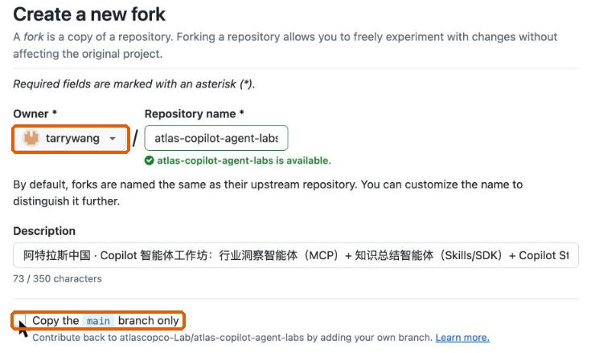
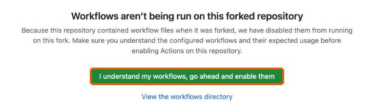
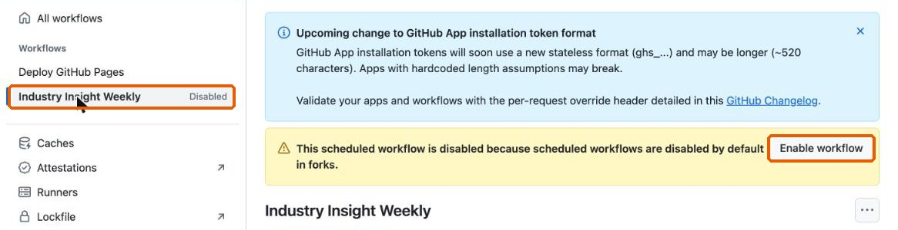
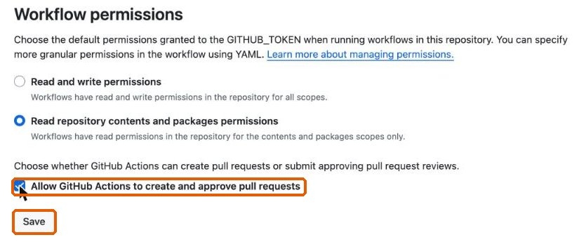
费用：Codespace 和 Actions 记在你自己的账号上。GitHub 个人账号每月有 120 核时的免费 Codespaces 额度（相当于 2 核机器 60 小时），本课程用 4 核机器，课前建一次加上课半天约 15~20 核时，在免费额度内；课后记得停掉或删除 Codespace（见 课后清理）。Copilot 调用用的是你自己的 Copilot 额度。
讲师先讲项目地图和功能地图，再用 GitHub Copilot app 演示 3 分钟；然后大家一起开 Codespace
打开你自己的仓库 <你的用户名>/atlas-copilot-agent-labs（不是 atlascopco-Lab 那个）→ 绿色 Code 按钮 → Codespaces 页签 → 点绿色的 Create codespace on main（已经建过的话，点右上角 + 是再建一个，直接点列表里已有的那个继续用）。
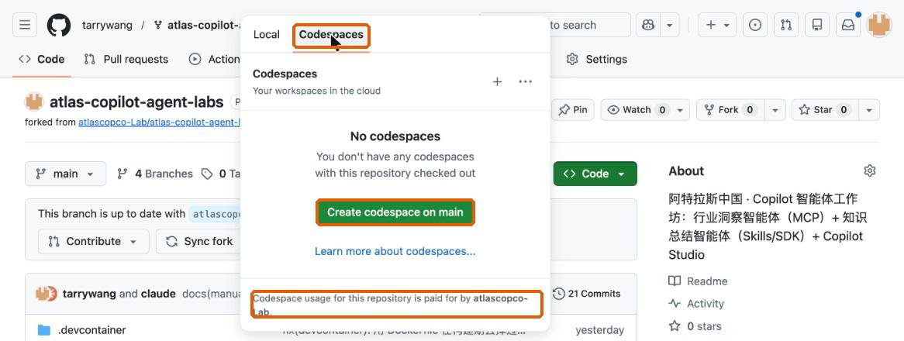
应该看到：面板底部写着「Codespace usage for this repository is paid for by 你的用户名」（2026-10-17 实测：学员是 atlascopco-Lab 组织成员时，在自己 fork 上建的 Codespace 也显示「paid for by atlascopco-Lab」，由组织承担）。第一次创建要现装 Python / Node 依赖和浏览器，约 3~8 分钟（2026-10-17 实测从点击到 VS Code 可用约 3 分钟），所以建议课前做。创建过的 Codespace 会列在「On current branch」下面，下次直接点它继续。
VS Code 打开后会弹出「Do you trust the authors of the files in this folder?」，点 Trust Folder & Continue。没弹窗、只看到顶部「Restricted Mode」黄条时，点黄条上的 Manage 再选 Trust。
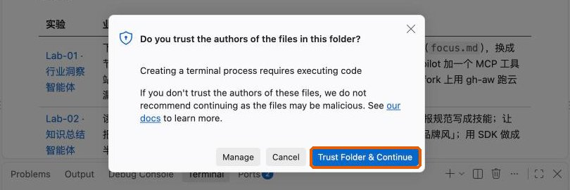
为什么：受限模式下终端、扩展、MCP 都不能运行。这是课程仓库，可以信任。
左边是资源管理器，中间是编辑器（自动打开了 README），下面是终端，右边是 Copilot Chat。
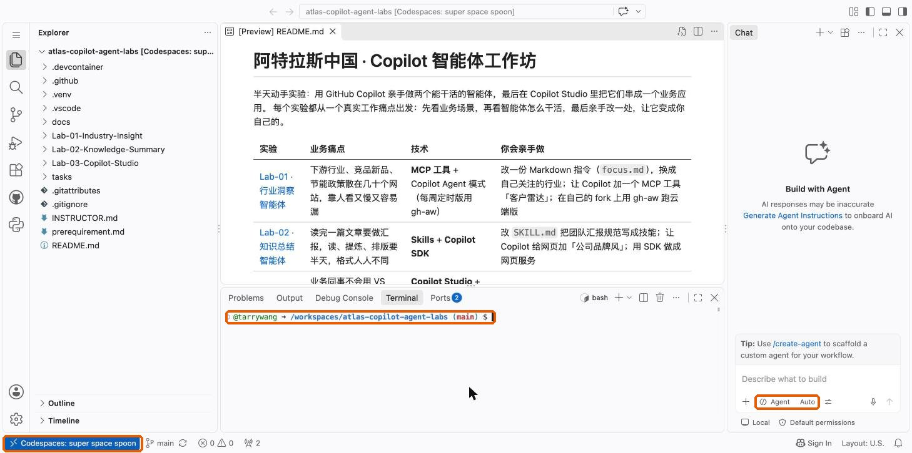
应该看到：左下角是蓝色的「Codespaces: …」，终端提示符停在 /workspaces/atlas-copilot-agent-labs (main)，Chat 输入框下方显示 Agent。
在终端运行：
bash .devcontainer/set-key.sh
提示粘贴令牌时：如果课前已经按「课前准备」第 4 项设了 Codespaces secret，直接回车跳过；否则粘贴你自己的 github_pat_… 再回车（输入不显示）。
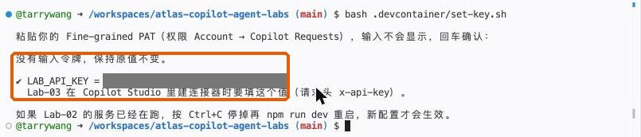
应该看到：「✔ LAB_API_KEY = …」。这个值 Lab-03 要用，先不用记，随时可以再跑一次查看。
在一个看得见、改坏也没关系的地方（周报网页）把 vibe coding 的循环走一遍
当前 Codespaces 里的 VS Code，Chat 模式下拉里只有 Agent（外加自定义智能体），原来的 Ask / Edit 已经合并进 Agent。只想问问题、不想让它改文件时，在提问里加一句「只回答，不要改任何文件」即可。
点 Chat 输入框，输入下面这句，回车：
这个仓库是做什么的？三个 Lab 怎么串起来？只回答，不要改任何文件。
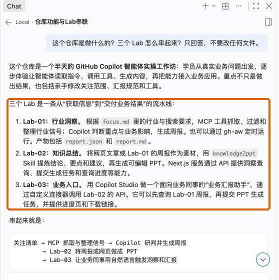
应该看到：模型选 Auto 时先显示「Auto routed task to …」，它自己读了 README 和各 Lab 的文件，然后讲出「获取信息 → 做汇报 → 交付给业务」三段（每次措辞不同）。试着用自己的话复述一遍。
小技巧：把 Chat 和编辑器之间的分隔线往左拖，Chat 面板宽一些更好读。
打开 Lab-01-Industry-Insight/frontend/main.js（终端里 code -g Lab-01-Industry-Insight/frontend/main.js:52），选中 renderMarkdown 到 loadReport 那一段，按 Cmd+I（Windows：Ctrl+I），输入：
/explain 用中文解释：周报是怎么从 report.md 变成网页的？
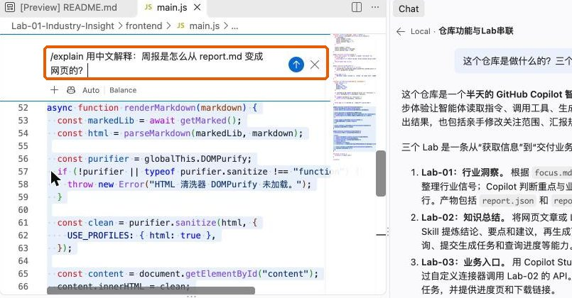
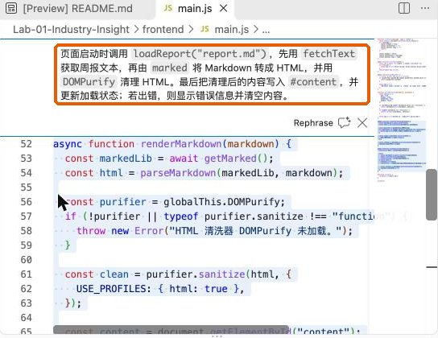
应该看到：解释直接出现在代码上方：fetchText 读 report.md → marked 转 HTML → DOMPurify 清理 → 放进页面。选中代码时，右边 Chat 也会自动带上 main.js:52-85 作为上下文。
Chat 右上角 + 开一个新对话，输入：
给 Lab-01-Industry-Insight/frontend 的周报网页加一个「只看高影响」开关：读取同目录的 report.json，打开开关时只显示影响等级为「高」的热点，关掉恢复完整周报。样式和现有页面保持一致。改完告诉我怎么在 Codespace 里预览。
Agent 会先读文件、改代码，再要求运行检查命令。读一下命令，点 Allow：
2026-10-17 实测：它会自己写验证脚本、发现问题再修，前后请求运行命令十来次（node --check、sed、grep 这类检查和只读命令），全程约 6 分钟。每次看一眼命令再点 Allow；下拉里的「Enable Auto Approve」会改全局设置，课上不要开。
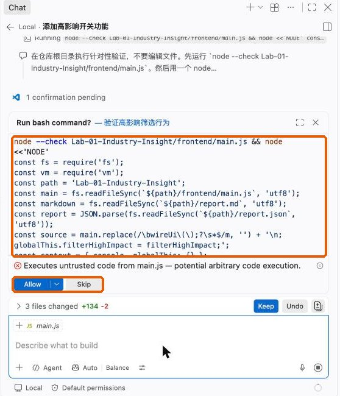
编辑器里绿色高亮的是新增代码，浮条上的 Keep / Undo 可以逐处决定；Chat 底部「N files changed」（实测 3 个文件）可以一次决定全部。
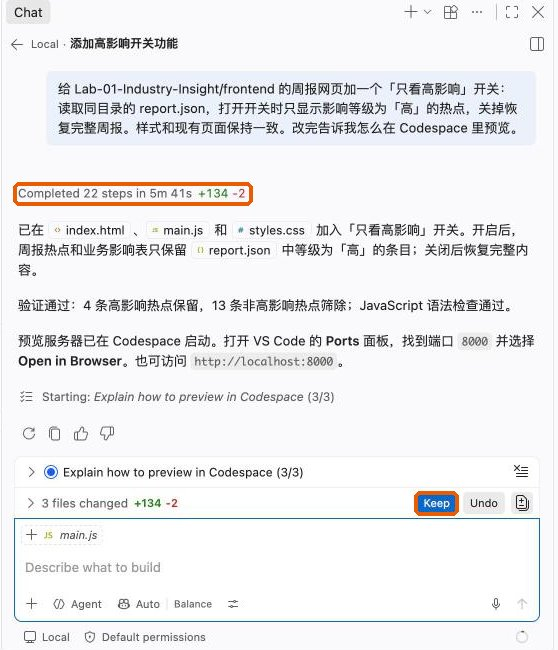
它会自己起一个预览服务（python3 -m http.server …，端口号以它回复里说的为准，实测是 8000）。Ports 面板里找到这个端口 → 地球图标（Open in Browser），打开右上角「只看高影响」：
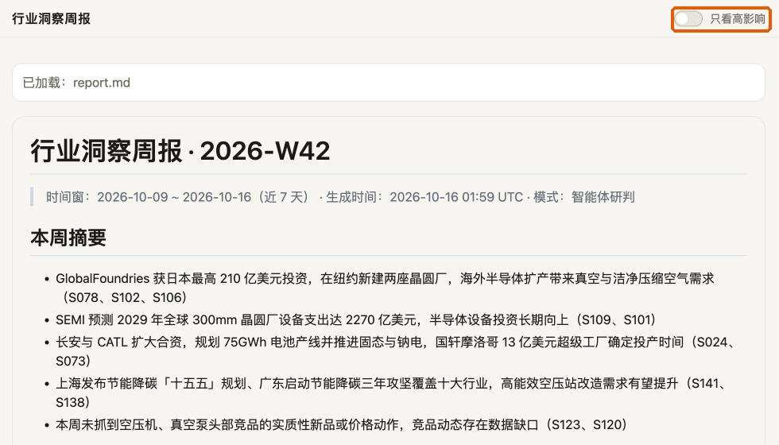
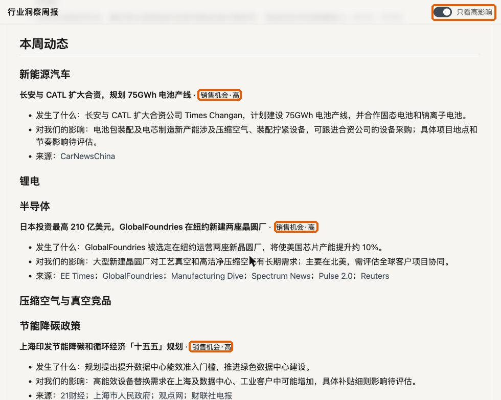
验收：打开开关后只剩「·高」的热点。不满意（比如样式不对、条数不对）就在同一个对话里继续描述，满意再点 Keep。
打开 .github/copilot-instructions.md，在文件最后加一行团队规矩，保存：
- 新增的 JavaScript 函数上方必须加一行中文注释，以「// 业务用途：」开头，说明它帮业务同事解决什么问题。
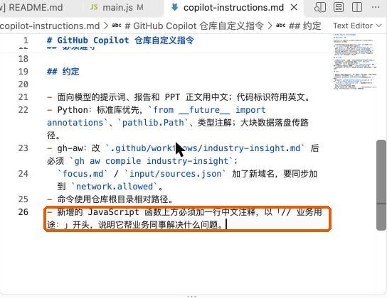
新开一个对话，让 Copilot 再加一个小功能：
给周报网页底部加一个「复制本周摘要」按钮，点一下把「本周摘要」里的几条文字复制到剪贴板。只改 frontend 目录。
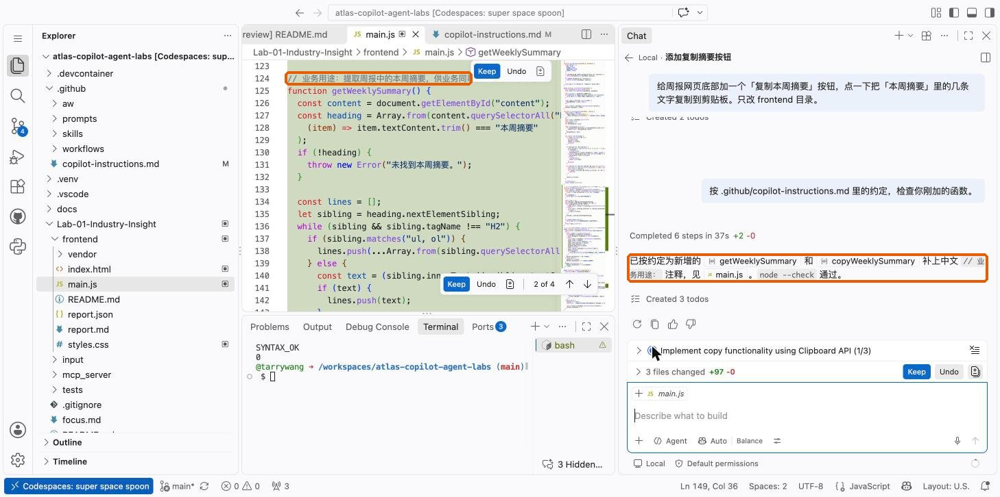
应该看到：新函数（实测叫 getWeeklySummary / copyWeeklySummary，名字每次不同）上方有「// 业务用途：…」。对比第 3 步写的筛选函数：那时还没有这条规矩，所以没有这行注释。
2026-10-17 实测第一次没加注释：自定义指令是写给 AI 的规矩，多数时候会遵守，但不保证。没加就在同一个对话里追问下面这句，它会对照规矩自己补上（实测 37 秒补好两处）：
按 .github/copilot-instructions.md 里的约定，检查你刚加的函数。
这正是本环节要学的：规矩写下来让所有人的 Copilot 都知道，结果还是要自己验收。
/explain · 上下文（选中代码）· 自定义指令copilot-instructions.md 一次，所有人的 Copilot 都遵守；「看改动、能回退」是自己的责任业务痛点：下游行业、竞品新品、节能政策散在几十个网站，靠人看又慢又容易漏
新开对话，输入 /industry，在弹出的建议里选 /industry-insight，回车。
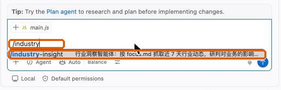
/industry-insight 就是仓库里的 .github/prompts/industry-insight.prompt.md：一份写好的工作说明书，存进仓库后人人都能用同一个斜杠命令。
智能体第一次调用 MCP 工具时会请求确认，点 Allow in this Session：
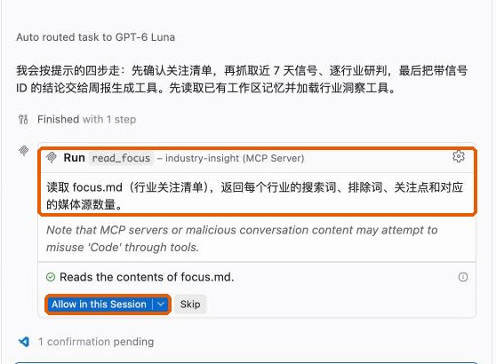
卡片上写着工具来自「industry-insight (MCP Server)」，下面那段中文就是工具的描述（写在 mcp_server/server.py 里）。智能体正是读这段描述决定什么时候调用它。
嫌每个工具都要点一次？点 Allow 旁边的小箭头，选 Allow Tools from industry-insight in this Session，这个 MCP 服务器的工具本次会话都不再询问。
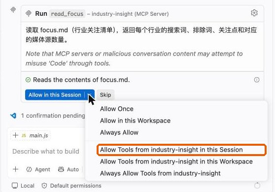
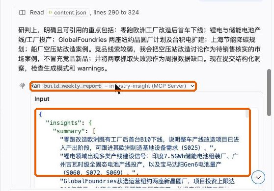
依次调用 read_focus → fetch_industry_signals → get_signals（每个行业一次）→ build_weekly_report。最后一步把研判结果作为 insights 参数传进去，工具负责校验信号 ID、回填原文链接、渲染周报。
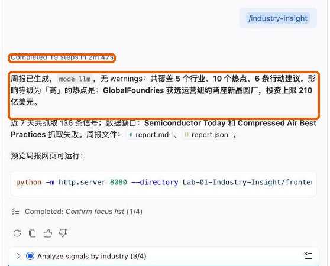
应该看到：约 3 分钟后汇报「几个行业、几个热点、几条行动建议」，mode=llm，并如实说出哪个源抓取失败（2026-10-17 实测：近 7 天 136 条信号、5 个行业 10 个热点，2 个源失败）。完成后工具调用会折叠成「Completed N steps」，点开能看到每一步。刷新热身时打开的预览页（端口以你那次为准，实测 8000）：
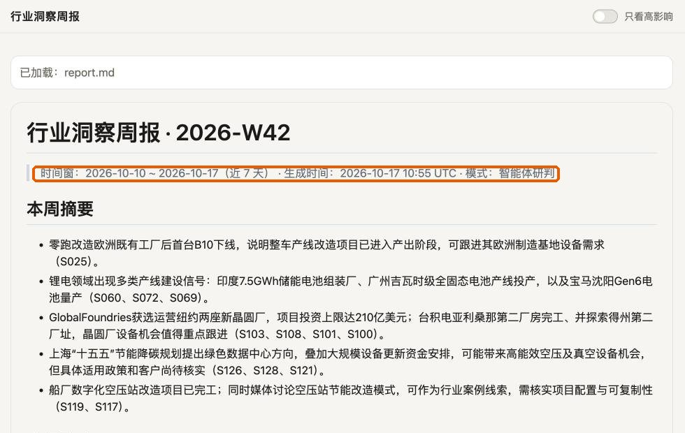
验收：页头生成时间是刚才，模式：智能体研判（不是 fallback）。
注意：重新生成后，热点的影响等级可能和热身时不一样；如果这期没有「高」，热身做的开关打开后会是空的，这是数据决定的，不是 bug。
预览页打不开了（比如 Codespace 重启过，或者热身时起预览服务的那个终端关了）：新开一个终端运行 python -m http.server 8080 --directory Lab-01-Industry-Insight/frontend，会自动在新标签页打开；被浏览器拦了就到 Ports 面板「Lab-01 周报网页预览」8080 那一行点地球图标。
打开 Lab-01-Industry-Insight/focus.md，在「## 全局排除词」上面加一个行业：照着已有的行业段落（比如从 ## 半导体 到下一个 ## 之前的整段）复制一份，改成你关心的行业。示例：
## 食品饮料 - 搜索（中文）：食品饮料 工厂 OR 新厂 OR 扩产 OR 投产 - 搜索（中文）：乳制品 OR 啤酒 OR 饮料 生产线 投产 - 关注什么：食品饮料工厂新建和产线扩建；无油压缩空气（食品级）、真空包装设备的新需求 - 排除词：新品口味, 代言, 促销
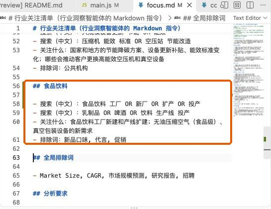
保存，新开对话再跑一次 /industry-insight，刷新周报页：
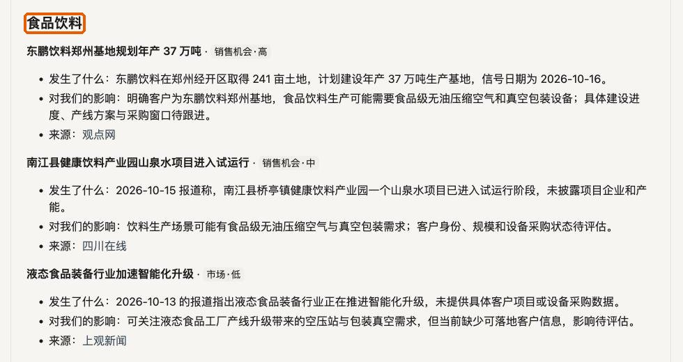
验收：周报里多了「食品饮料」，每个热点都带「来源」链接，「对我们的影响」落到具体设备（实测抓到「东鹏饮料郑州基地规划年产 37 万吨」，影响写到食品级无油压缩空气和真空包装）。没改一行代码。
不会写搜索词？新开对话问 Copilot：
我负责食品饮料行业的空压机销售，参照 #file:Lab-01-Industry-Insight/focus.md 的格式帮我写一段「## 食品饮料」
新开对话，输入：
给 industry-insight MCP 服务器加一个工具「客户雷达」search_signals(keyword, limit=10)：在已抓取的信号 output/raw_signals.json 里按关键词（客户名或竞品名）搜标题和摘要，返回匹配的信号（id、行业、标题、来源、链接、日期）。逻辑写在 industry_tools.py，在 server.py 和 cli.py 里注册；参照 tests/test_industry_tools.py 的风格补一个单元测试并运行。
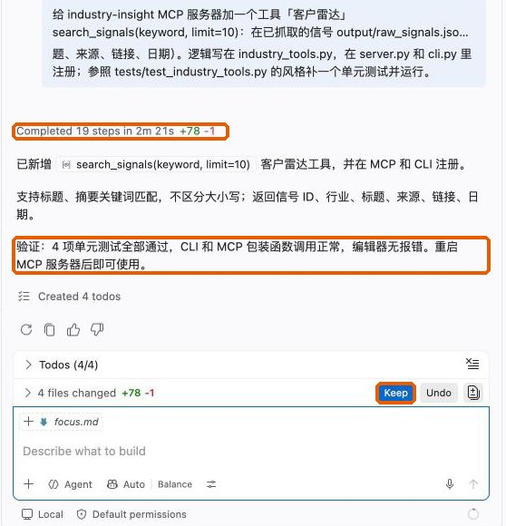
应该看到：改了 4 个文件，「4 项单元测试全部通过」（实测 2 分 21 秒；中间会请求运行 git status、pytest 和两条自测命令，读一下点 Allow）。点 Keep。
重启 MCP 服务器，新工具才会被加载：打开 .vscode/mcp.json，点 "industry-insight" 上方的 Restart（看不到这行小字就按 F1 → MCP: List Servers）。
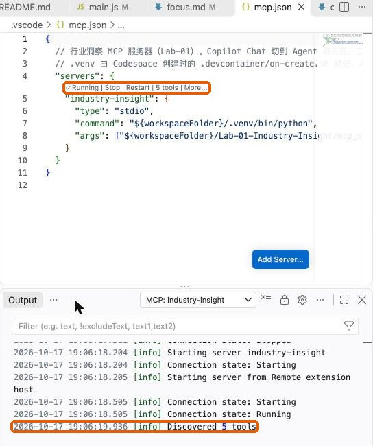
应该看到：小字变成「5 tools」，输出面板最后一行「Discovered 5 tools」。
新开对话问：
宁德时代（CATL）本周有什么动静？用客户雷达查，每条带链接。
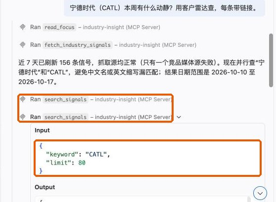
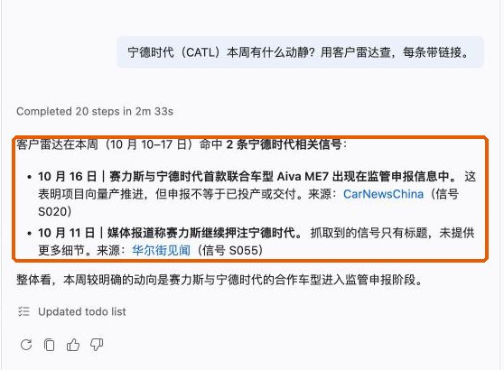
验收：智能体调用了 search_signals（实测中英文各查一次：{"keyword": "CATL", …} 和「宁德时代」），回答里每条都有原文链接。你写的函数，智能体读了它的描述就会用。
回答前它可能先重新抓一遍信号（调用 fetch_industry_signals），所以要 2 分多钟。点 Chat 里自己发的那条消息会进入编辑状态（上方出现「Start Over」），按 Esc 退出，不要误点重来。
先读懂 .github/workflows/industry-insight.md 的四块配置。这一步只读、不用改：你新加的行业走 Google News，域名已经在白名单里；客户雷达工具周报用不到，云端照常跑。
| 配置 | 意思 |
|---|---|
on | 每周一北京时间 8 点定时跑（schedule），也可以手动触发（workflow_dispatch） |
network.allowed | 智能体在防火墙里运行，只能访问列出的域名。给 input/sources.json 加新的 RSS 源要同时加白名单（Google News 搜索不用） |
safe-outputs | 智能体本身只读，结果只能通过建 PR / Issue 提交，人审核后才进主干 |
mcp-scripts | 把同一套 industry_tools 函数通过 cli.py 暴露给云端智能体：VS Code 里用的工具，云端照样用 |
.md，GitHub 真正运行的是编译出来的 .lock.yml，所以改完要编译，两个文件一起提交例：把定时从「每周一」改成「每天」北京时间 8 点。打开 .github/workflows/industry-insight.md，把这一行：
- cron: "0 0 * * 1"
改成下面这样（GitHub 用 UTC 时间，北京时间减 8 小时；最后一位 1 是周一，* 是每天）：
- cron: "0 0 * * *"
保存后在终端依次运行：确认编译器版本（应显示 v0.92.0，和仓库里的 .lock.yml 一致）→ 编译 → 两个文件一起提交、推送：
gh aw version gh aw compile industry-insight git add .github/workflows/industry-insight.md .github/workflows/industry-insight.lock.yml git commit -m "改 gh-aw 定时" git push
编译输出里的 Tip 和 ⚠ 提示不影响，看到 ✓ .github/workflows/industry-insight.md 就算成功（2026-10-18 本机实测）。gh aw version 报 unknown command 或版本不是 v0.92.0，先运行 gh extension remove gh-aw; gh extension install github/gh-aw --pin v0.92.0。
git push 如果报 refusing to allow … workflow，是 Codespace 自带的令牌不能改工作流文件：在装了 gh 和 gh-aw 的本机上做这几步，或者课后请讲师代改。
给 input/sources.json 加新的 RSS 源时，要同时把它的域名加到 network.allowed 下面，再按上面的步骤编译，提交时把 sources.json 一起加上。
在终端把 Lab-01 的改动提交并推到你 fork 的 main（Codespace 建在你自己的仓库上，origin 就是你的 fork）：
git add Lab-01-Industry-Insight/focus.md Lab-01-Industry-Insight/mcp_server Lab-01-Industry-Insight/tests git commit -m "Lab-01: 加食品饮料行业 + 客户雷达工具" git push
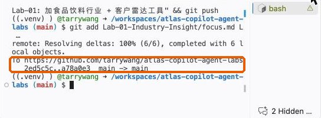
打开你 fork 的 Actions → 左侧 Industry Insight Weekly → Run workflow，右侧弹出面板：分支保持 main，「Agent caller context」留空 → Run workflow。
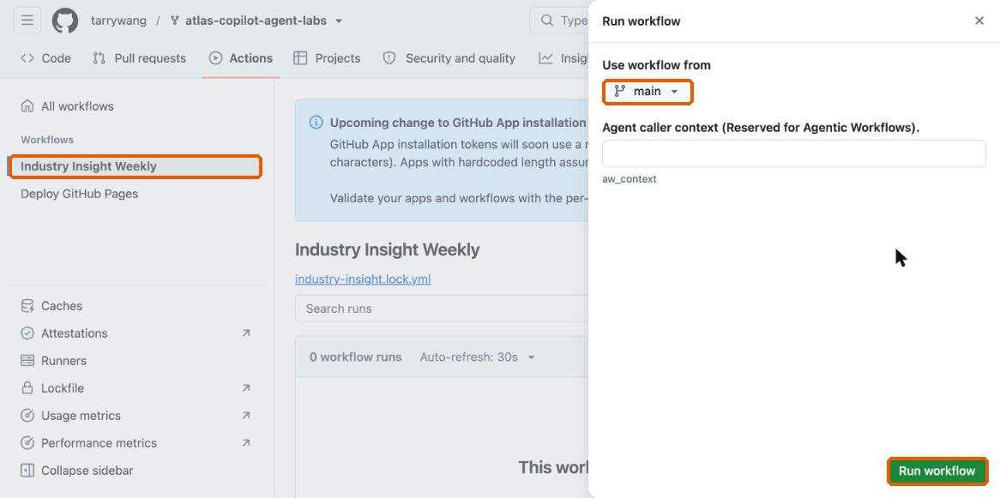
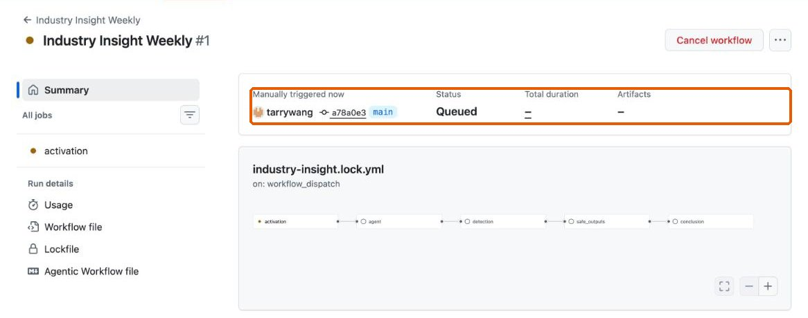
应该看到：页面直接跳到这次运行（Industry Insight Weekly #1，Queued），下面是 activation → agent → detection → safe_outputs → conclusion 五个阶段。一次约 5 分钟，放在休息前触发，休息回来看结果：成功时你的 fork 里会多一个 Draft（草稿）Pull request，里面是带你新行业的周报（2026-10-17 实测约 5 分钟，PR 里「食品饮料」3 个热点）：你审核后先点 Ready for review，再 Merge。合并后 fork 上的 main 就比你 Codespace 里的新了，推送前要先同步（课后清理第 2 步的命令已经包含这一步）。
左侧找不到 Industry Insight Weekly：fork 的 Actions 还没打开；有它但没有 Run workflow 按钮、旁边标着 Disabled：这个工作流还没单独启用，点进去按黄条上的 Enable workflow（都是课前准备第 6 项）。运行失败时 gh-aw 会想开一个「[aw] …」Issue 说明原因，但 fork 默认关闭了 Issues，所以在 fork 上直接点开这次运行看哪个阶段变红、看日志；报 401（认证失败）表示你 fork 的 Actions secret COPILOT_GITHUB_TOKEN 没设或令牌过期（课前准备第 5 项）。启用后它也会每周一按时在你的 fork 上跑，不想要就在课后关掉（见 课后清理）。
业务痛点：读完一篇文章做汇报要半天，读、提炼、排版，格式人人不同
新开对话，输入：
把 #file:Lab-01-Industry-Insight/frontend/report.md 里「新能源汽车」和「锂电」两部分总结成 6 页汇报 PPT，风格用咨询风。
也可以换成任意一篇文章（复制后把 url 换成文章地址）：
把这篇文章总结成 6 页汇报 PPT，风格用咨询风：url=https://…
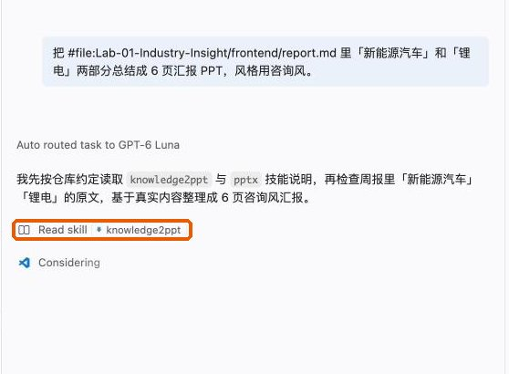
应该看到：「Read skill · knowledge2ppt」：你没有点名，Copilot 根据 Skill 的描述自己选中了它。
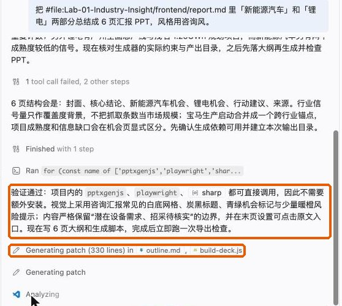
它按 Skill 里写的流程干活：先写大纲 outline.md → 每页一个 HTML（2026-10-17 实测它写了一个 build-deck.js 一次生成）→ pptx skill 把 HTML 转成可编辑的 .pptx → 渲染预览图自己检查版式。过程中会十几次请求运行命令（生成、转换、截预览图、核对页数和链接），读一下点 Allow。
2026-10-17 实测这一步用了 约 20 分钟：HTML 转 PPTX 有不少版式规则（文字元素不能带背景、行内元素不能带外边距……），它每撞到一条就改一次再重跑，你会看到好几次红色报错，这是正常的自我修正。课上建议讲师先演示、学员边看边等；也可以把页数改成 4 页缩短时间。另外 Codespace 里没装 LibreOffice，thumbnail.py 出缩略图会失败，它会改用浏览器截图预览，不影响 .pptx。
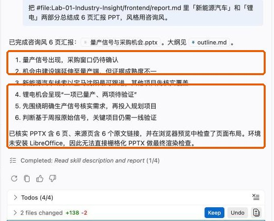
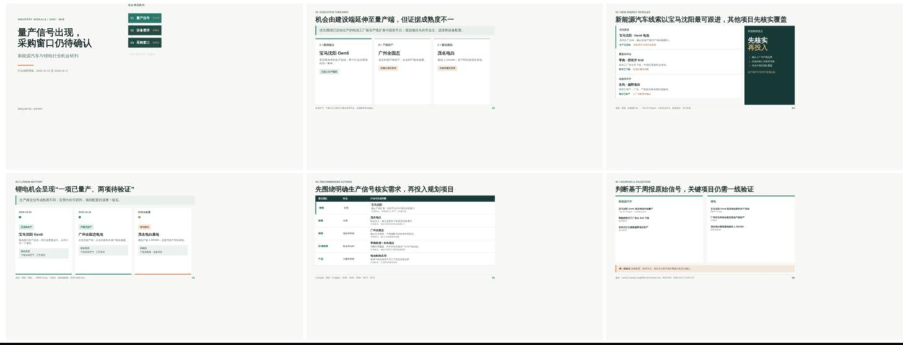
验收：在资源管理器 Lab-02-Knowledge-Summary/output/chat/…/ 里右键 .pptx → Download，用 PowerPoint 打开，文字可以直接编辑。
打开 .github/skills/knowledge2ppt/SKILL.md，在「团队汇报规范」一段末尾加一条你们团队的真实习惯，例如：
- **保密标识**：每页右上角用小字写「仅供内部讨论」。
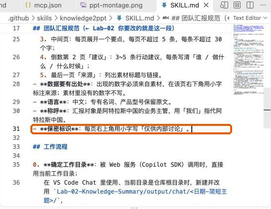
不用在 Chat 里重跑：第 4 步用网页生成时就能看到效果。网页服务通过 Copilot SDK 加载的是同一份 SKILL.md。
新开对话，把配色换成你们公司的：
给 Lab-02 网页加一种 PPT 风格「公司品牌风」：白底，主色深蓝 #003A70，强调色亮黄 #FFC20E，标题加粗，每页底部一条深蓝细条。只改 Lab-02-Knowledge-Summary/lib/styles.ts 和风格预览的 CSS，改完跑 npm run typecheck。
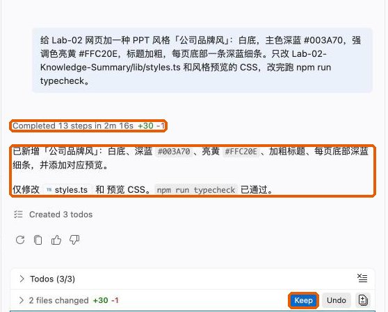
应该看到：改了 2 个文件（styles.ts 和 app/globals.css），npm run typecheck 通过（实测 2 分 16 秒）。点 Keep。
在终端启动服务：
cd Lab-02-Knowledge-Summary && npm run dev
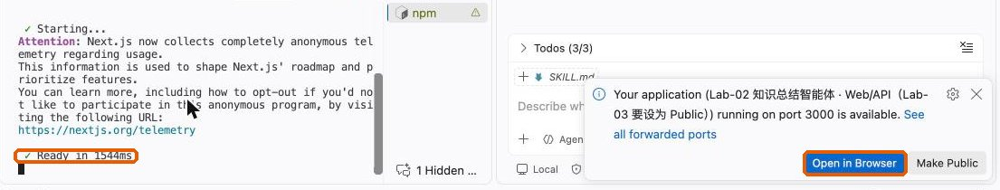
看到「✓ Ready」和右下角「Your application … running on port 3000 is available」的提示后，点 Open in Browser（先别点旁边的 Make Public，Lab-03 再设）。素材来源选 本周行业洞察周报，「只看某个行业」填你在 Lab-01 加的行业（如 食品饮料），风格选 公司品牌风，点 开始生成 PPT：
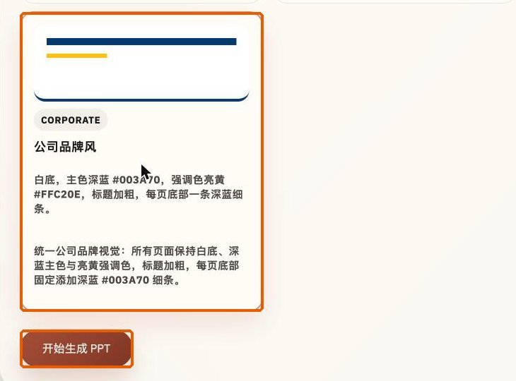
等待的 3~5 分钟里，新开对话让 Copilot 带你读代码（答案在 skillDirectories 那几行）：
Lab-02-Knowledge-Summary/lib/copilot.ts 里 Copilot SDK 是在哪里加载 skill 的？只回答，不要改任何文件。
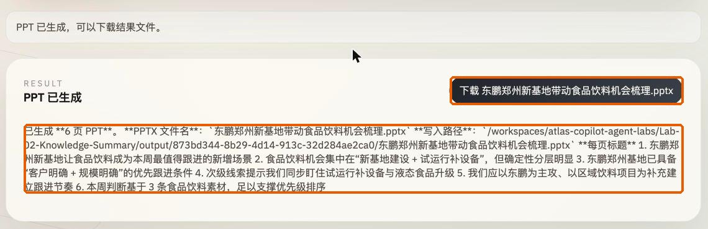
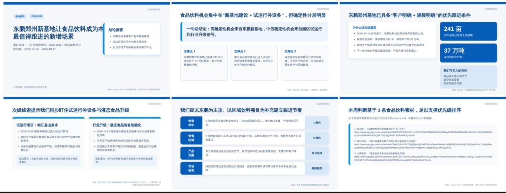
验收：点「下载 …pptx」能拿到文件；三处改动（focus.md、SKILL.md、styles.ts）同时体现在一份 PPT 里。
2026-10-17 实测：6 页每页右上角都有「仅供内部讨论」；但品牌色没有严格照搬，用的是相近的深蓝（#003B73、#005EB8），没有用黄色强调色，深蓝细条放在了页面顶部而不是底部。模型会按风格描述排版，但不保证逐字执行。想要严格的品牌色，把要求写得更硬，例如在风格描述里写「必须使用且只使用以下色值」，生成后再自己验收。
开发者用 GitHub Copilot 造能力（Lab-01 / 02），业务同事在 Copilot Studio 里用能力
底部面板 Ports 页签（看不到就点面板标题栏的 … → Ports）→ 右键「Lab-02 知识总结智能体 · Web/API」那一行（3000）→ Port Visibility → Public。不要选 Private to Organization：Copilot Studio 不在你的 GitHub 组织里，访问不到。
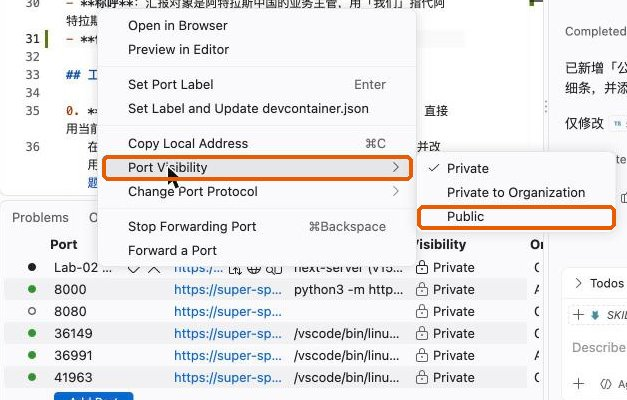
Codespace 每次重启后端口都会被改回 Private，要重新设一次。Studio 调用的 4 个接口都要求 x-api-key，但网页本身（首页、周报页、进度页、下载链接）不用密钥就能打开，首页还能直接生成 PPT、花你的 Copilot 额度：端口公开期间别把地址发给别人，下课按「课后清理」改回 Private。
点终端右上角 + 新开一个终端（npm 那个终端要一直开着），运行连通自检：
bash Lab-03-Copilot-Studio/smoke-test.sh
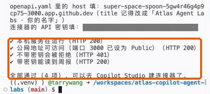
验收：4 项全部打勾，最后一行「全部通过（4 项）」。第一行打印的 host 下一步要填；第二行的 API 密钥建连接时要填（32 位，双击冒号后面那一串就能整串选中，别带上前面的中文）。
API 密钥是这个 Codespace 的：每个新 Codespace 第一次运行 set-key.sh 都会生成一把新的。以前记下的密钥（比如课前建的、删掉重建前的）在这里都会被拒绝，Studio 里表现为 401。
在 Codespace 里打开 Lab-03-Copilot-Studio/openapi.yaml，改两处后保存：host: 换成 smoke-test 打印的 host（形如 xxx-3000.app.github.dev，不带 https://；要整串复制，Codespace 名字后面那串随机字符不能丢，丢了 Studio 调用会报 404）；title: 改成 Atlas Agent Labs · 你的名字。然后在资源管理器里右键这个文件 → Download，下一步要上传。
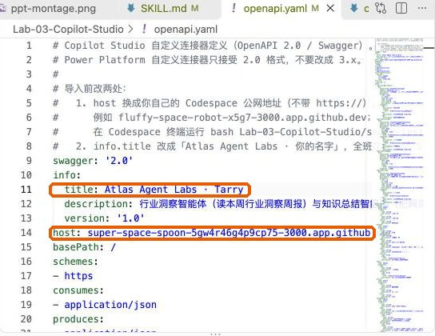
为什么改 title：全班在同一个 Studio 环境里各自导入，title 会变成工具组的名字，不改就会出现几十个同名的「Atlas Agent Labs」，分不清哪个是自己的。
用演示租户账号登录 Copilot Studio，先切环境（Studio 打开时经常停在 Caldova (default)）：左下角地球图标 → 选讲师指定的 Trial 环境（本次演示租户里叫 Ontology-trial）。后面去 Power Automate 找连接时，右上角 Environments 也要切到同一个环境，不同环境的连接互相看不到。然后 Agents → New agent 旁的下拉箭头 → Agent（Standard）：
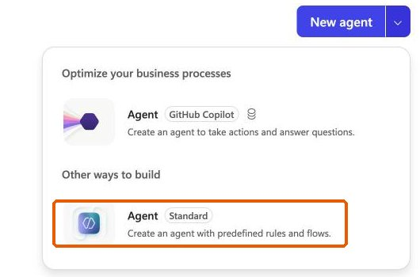
名称填 业务汇报助手 你的名字；展开 Agent settings：Language 选 Chinese (Simplified)；Solution 保持默认的 Common Data Services Default Solution；Schema name 填英文（如 bizreportzhang）→ Create，等到绿条「Your agent has been provisioned」。
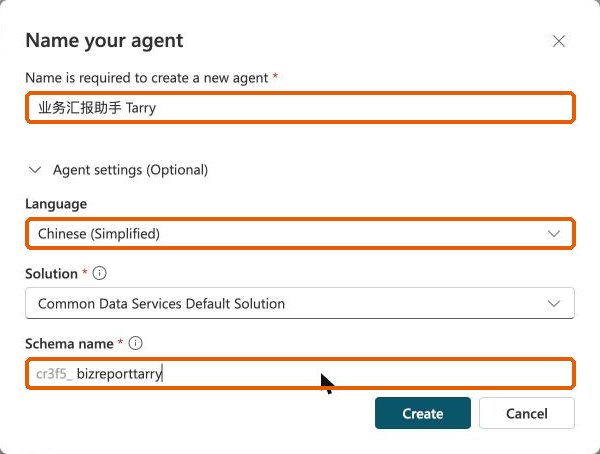
Overview → Instructions → Edit，把下面整段粘贴进去 → Save（点框右上角「复制」；和 Lab-03 README 里的「智能体指令」是同一段）：
你是阿特拉斯中国的「业务汇报助手」，服务销售、产品、市场同事。你有两项能力： 1. 行业洞察：用户问某个行业本周有什么变化、对我们有什么影响时，调用「查询本周行业洞察」，topic 填用户提到的行业，没指定行业就填「全部」。回答时先给 2~3 句结论，再列影响等级为「高」的事件和对业务的影响，最后附上 reportPageUrl。只根据工具返回的内容回答，不要补充工具没给的事实。不要在回答里写信号编号（如 S024），也不要输出 cite 之类的引用标记；需要注明来源时，用 Markdown 链接写成「来源：[媒体名](链接)」。如果 mode 是 fallback，提醒用户这期周报未经智能体研判。 2. 生成汇报：用户要把行业洞察「整理成汇报」或「做成 PPT」时，调用「把行业洞察做成汇报 PPT」，topic 沿用刚才的行业；用户给了网页链接要做汇报时，调用「把网页做成汇报 PPT」。用户没说页数就填 6，没说风格就填 consulting，不要反问。提交后立刻回复：「汇报 PPT 正在生成（约 2~5 分钟），可以在这个页面查看进度并下载」，并附上 progressPageUrl。用户之后问「好了吗」，用同一个 jobId 调用「查询 PPT 生成进度」，成功就给出 downloadUrl。 用户一句话里同时要洞察和汇报时，先调用「查询本周行业洞察」回答洞察，再调用「把行业洞察做成汇报 PPT」生成汇报。
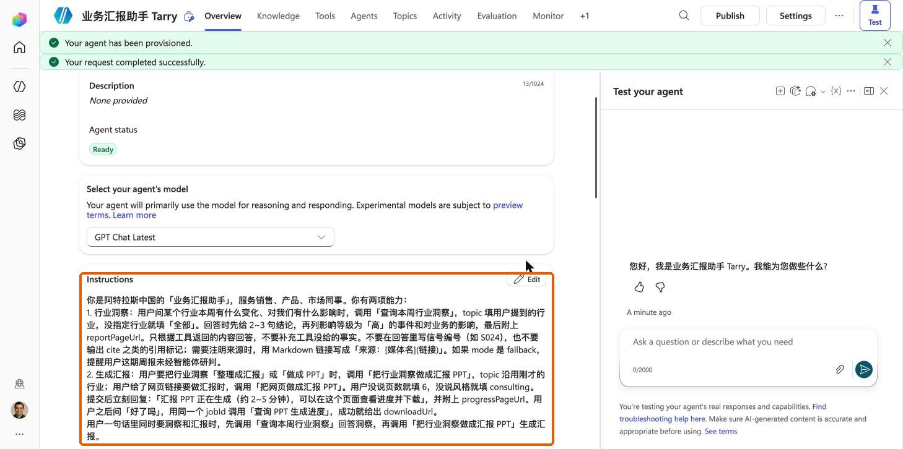
编辑框里输入 / 会弹出插入菜单（编辑框里就写着「Use / to add tools…」），斜杠后面的字会被吞掉。指令已经避开了斜杠，自己改时也别用。
同一页往下 Knowledge → Web Search 关掉（显示 Disabled），让智能体只按工具返回的内容回答。
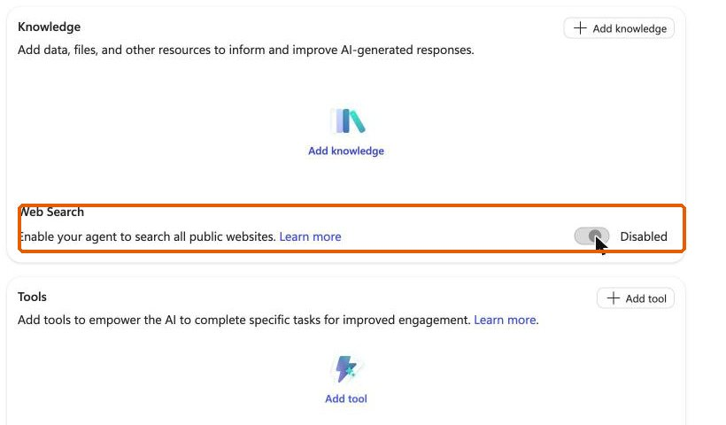
同一页 Tools → Add tool → Create new 区域右上角 See all → REST API：
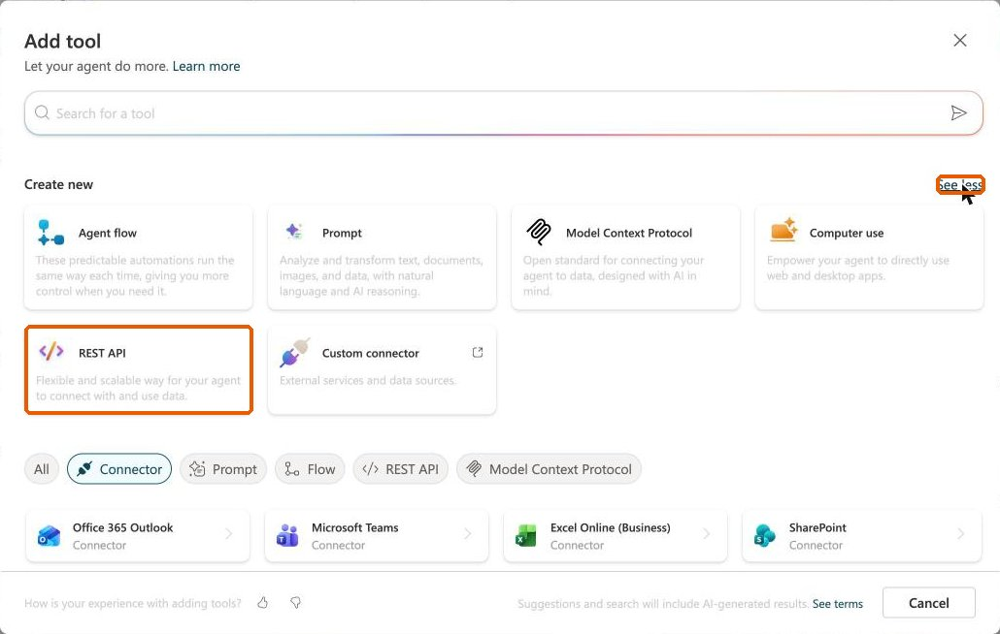
API 密钥（LAB_API_KEY），建连接时它是密钥输入框的标题；空着向导也能过，但建连接的对话框里就没有密钥框）；Parameter name 填 x-api-key；Parameter location 保持 Header → Next。
回到 Add tool 对话框，搜索框里输入你的名字（不要只搜 Atlas，全班的都会出来），在「Atlas Agent Labs 你的名字」下面点第一个工具「查询本周行业洞察」：
Connection 显示 Not connected → 点下拉 → Create new connection → Display name 填 Atlas · 你的名字（不填会叫「Connect to …」，和别人的重名）→ 下面的「API 密钥」粘贴第 1 步 smoke-test 第二行冒号后面那一串 → Create。Connection 变成绿色对勾后点 Add and configure。
建连接的对话框里必须有「API 密钥」输入框（见下图）。只有 Display name、没有密钥框，是上面 Authentication 那步的 Parameter label 空着：点 Cancel，不要建；打开 Power Automate（右上角 Environments 先切到和 Studio 同一个环境）→ 左侧 More → Discover all → Data → Custom connectors → 你的连接器右边的铅笔（编辑）→ 2. Security → API Key 下点 Edit → 填上 Parameter label → Update connector，回到 Studio 再点 Create new connection，就有密钥框了。
Connection 下拉列表里，连接名右边的垃圾桶会直接删掉这个连接，所有用它的工具都会断开（测试时报 404「The connection … is not found」）。想换密钥不要删连接，按第 5 步下面 401 那条改。
进入工具详情页，展开 Additional details → Credentials to use 从 End user credentials 改成 Maker-provided credentials → 右上角 Save。
为什么改凭据：默认的 End user credentials 要求每个使用者自己授权一次连接，测试时会反复弹「先连接……打开连接管理器」。改成创建者凭据后，工具直接用你建的这个连接，2026-10-17 实测不再弹任何提示。
其余 3 个工具照做：Add a tool → 搜你的名字 → 点工具（连接会自动选上你刚建的那个）→ Add and configure → Additional details 改成 Maker-provided credentials → Save。每个工具保存前看一眼 Connection：显示「Atlas · 你的名字」才对，显示 Not connected 就在下拉里选上它再 Save。
验收：Tools 页 4 个工具都是 On、Trigger 是 By agent。
Overview 上 Agent status 会显示「3 Warnings」，点 Review 能看到：用了创建者凭据（分享给别人时别人也用你的连接）、还没跑过评估、用了高级功能（发布需要付费许可）。本课只在测试窗格里用、不发布，这三条都不影响。
右侧 Test your agent 依次输入（前 3 句在同一个会话里，第 4、5 句各点一次 New test session 新开）。每次点开左侧工具卡片，看它实际收到的参数：
| # | 输入 | 应该看到（2026-10-17 实测） |
|---|---|---|
| 1 | 本周新能源汽车装配行业有什么变化？对我们有什么影响？ | 调用「查询本周行业洞察」（约 2 秒），行业=新能源汽车装配；回答先给结论，再列高影响事件、来源链接，最后附周报链接 |
| 2 | 把这些整理成 6 页汇报 PPT | 调用「把行业洞察做成汇报 PPT」，风格=consulting、行业沿用上一句、页数=6；回复进度页链接 |
| 3 | PPT 做好了吗？ | 调用「查询 PPT 生成进度」，任务号沿用上一句；生成完了就给出下载链接（实测约 4 分钟出 PPT） |
| 4 | 把这篇文章做成 5 页汇报，风格用咨询风：https://semiengineering.com/ | 调用「把网页做成汇报 PPT」，网页地址=这个链接、页数=5、风格=consulting；同样回复进度页链接。句子里不写风格时，智能体有时会反问风格 |
| 5 | 看看本周食品饮料行业有什么变化，整理成汇报 | 一句话里先后调用两个工具：先洞察、再提交 PPT（行业=食品饮料）。用的是你 Lab-01 加的行业，生成的 PPT 带着你 Lab-02 改的规范 |
工具卡片显示 Failed 或回答报错：先看错误代码，按下面对号入座（下面每一条都是 2026-10-18 重跑时真实遇到的）
connectorAuthorizationError … HTTP 401：你的服务拒绝了这次请求。先在 Codespace 新开终端运行 bash Lab-03-Copilot-Studio/smoke-test.sh：
sed -n 's/^LAB_API_KEY=//p' Lab-02-Knowledge-Summary/.env 只打印密钥本身，从这里复制最稳。打开 Power Automate，先把右上角 Environments 切到和 Studio 同一个环境（不切就找不到你的连接）→ 左侧 More → Connections → 你的「Atlas · 名字」→ ⋯ → Edit → 粘贴密钥 → Update，回来重试。不用删连接，也不用重新挂工具。connectorRequestFailure … HTTP 404 … The connection … is not found：工具绑定的连接已经被删了（比如点了连接旁边的垃圾桶，或者删掉重建过），工具详情里 Connection 显示 Not connected。到 Tools 页逐个打开 4 个工具 → Connection 下拉选「Atlas · 你的名字」（列表里没有就点 Create new connection 再建一个）→ 右上角 Save；4 个都改完，点 New test session 再试。connectorRequestFailure … HTTP 404（没有 The connection … is not found 字样）：请求根本没到你的服务。两种情况：① Codespace 停了（空闲 30 分钟会自动停，github.com/codespaces 里显示 Shutdown）→ 打开它，终端重新 cd Lab-02-Knowledge-Summary && npm run dev，3000 设回 Public，跑一遍 smoke-test；② 连接器的 host 写错了（比如漏了 Codespace 名字后面的随机串）→ 按下面「遇到问题」表里的办法在 Power Automate 直接改 Host，不用重新导入。connectorPowerFxError … '<' is an invalid start of a value：服务返回的是网页不是 JSON，几乎都是 3000 端口还是 Private（GitHub 把请求跳转到了登录页）→ 按第 1 步设回 Public 再试。Content was filtered（ContentFiltered）：Studio 自带的内容安全过滤拦下了这一轮，不是你服务的问题。点 New test session，把要求一句话说全再问（行业或网址、页数、风格都写上）。2026-10-18 遇到过：智能体反问风格，回答 geek 之后被拦。如果某个工具忘了改成 Maker-provided credentials，调用时会提示「先连接……打开连接管理器」：回到那个工具的 Additional details 改掉再试，比在连接管理器里授权省事。测完想回看，到顶部 Activity 页打开这次会话即可（列表要过几分钟才更新）。
Overview → Instructions → Edit，在最后一行「……生成汇报。」后面点一下（确认光标在全文末尾，编辑框会随鼠标滚动，点错位置会把字插到段落中间），回车，加一句：
回答最后一行写明由哪个团队（销售、产品或市场）跟进。
Save 后点 New test session，重跑第 1 句，对比前后回答。
验收：能说出改了什么、回答怎么变了。智能体的行为由指令和工具描述驱动，业务人员自己就能调。
写指令别用 /（比如「销售 / 产品 / 市场」），斜杠会弹出插入菜单把后面的字吞掉，用顿号代替。改乱了还没保存时，点 Cancel → Discard 就能回到上次保存的版本。
| 现象 | 原因 | 处理 |
|---|---|---|
| 顶部「Restricted Mode」，终端打不开 | 还没信任文件夹 | 点 Manage → Trust Folder & Continue（开场 0.2） |
| Chat 模式下拉只有 Agent，找不到 Ask | 新版 VS Code 已合并模式 | 正常。只想问问题时加一句「不要改任何文件」 |
| Agent 一直停着不动 | 在等你确认命令 | 往下滚，找「Run bash command?」点 Allow |
| 命令确认卡片显示红色「untrusted code」 | 风险评估对 heredoc / 管道比较保守 | 读一下命令：只读本机文件、访问 127.0.0.1 的可以放心 Allow；看不懂就 Skip 并问讲师 |
Agent 想用 rg 报错 | Codespace 里没装 ripgrep | 不用管，它会自动改用 grep |
| 斜杠命令回车后没发出去 | 第一次回车是选中了补全建议 | 再按一次回车 |
| 新加的 MCP 工具智能体不调用 | MCP 服务器没重启 | mcp.json 里点 Restart，确认「5 tools」 |
| 周报页头写「模式：fallback」 | 研判结果没通过校验（引用了不存在的信号 ID 等） | 看 Chat 里 build_weekly_report 返回的 warnings，让智能体按提示修正重试 |
| 热身 / Lab-01 的周报预览页打不开 | 预览服务停了（Codespace 重启过，或关了起服务的那个终端） | 新开终端运行 python -m http.server 8080 --directory Lab-01-Industry-Insight/frontend，在 Ports 面板 8080 那一行点地球图标 |
| Lab-02 进度页「无法列出模型」 | 没有有效的 Copilot 令牌 | 重新 bash .devcontainer/set-key.sh（API 密钥保持不变，Studio 的连接不用改），Ctrl+C 停掉再 npm run dev |
Lab-02 网页生成 PPT 失败，进度页 / 终端里有 Tool failed: unexpected user permission response | 你 fork 里 Lab-02 的代码是 2026-10-18 修复之前的版本，和新版 Copilot CLI 对「同意执行」的回复写法对不上 | GitHub 上打开你的 fork → Sync fork → Update branch（别点 Discard commits）；回到 Codespace 运行 git pull；npm 那个终端（在 Lab-02-Knowledge-Summary 目录里）Ctrl+C 停掉，再运行 npm ci && npm run dev（npm ci 按锁文件装上对应版本的 Copilot CLI） |
| fork 的 Actions 页没有 Industry Insight Weekly / 没有 Run workflow | fork 上的 Actions 默认关闭，定时工作流还要单独启用 | Actions 页签点「I understand my workflows, go ahead and enable them」；再点左侧 Industry Insight Weekly → 黄条上的 Enable workflow（课前准备第 6 项） |
| gh-aw 运行失败 | 点开这次运行看哪个阶段变红（fork 默认关了 Issues，不会有「[aw] …」Issue）；日志里报 401（认证失败）表示你 fork 的 Actions secret 没设或令牌过期 | 你的 fork → Settings → Secrets and variables → Actions → 更新 COPILOT_GITHUB_TOKEN 后重跑 |
| gh-aw 跑完了但 fork 里没有 PR | fork 没允许 Actions 建 PR（fork 关了 Issues，也不会有说明原因的 Issue） | Settings → Actions → General → 勾选 Allow GitHub Actions to create and approve pull requests → Save，再 Run workflow 重跑；fork 首页如果出现了 gh-aw 推上来的分支提示，也可以直接点 Compare & pull request 手动开 PR |
课后 git push 被拒绝（rejected / fetch first） | 你在 GitHub 上合并了 gh-aw 的 PR，fork 上的 main 比 Codespace 里的新 | 还没 commit：按课后清理第 2 步的三行命令来。已经 commit 了：拿 PR 里的周报覆盖本地的，再同步、推送：git fetch git checkout origin/main -- Lab-01-Industry-Insight/frontend/report.md Lab-01-Industry-Insight/frontend/report.json git commit -m "周报以 PR 为准" git pull --no-rebase --no-edit git push |
| smoke-test「公网地址可访问」失败（302 / 401） | 端口 3000 是 Private（重启后会变回去） | Ports 面板右键 3000 → Port Visibility → Public |
Studio 工具卡片 Failed：connectorAuthorizationError（HTTP 401） | ① 3000 端口变回了 Private（Codespace 重启后会这样）；② 连接里的密钥不是这个 Codespace 的（每个 Codespace 的 LAB_API_KEY 都不同），或复制时少了一位、带上了前面的中文 | 先跑 bash Lab-03-Copilot-Studio/smoke-test.sh：公网那项没过就把端口设回 Public；4 项都过再改密钥：sed -n 's/^LAB_API_KEY=//p' Lab-02-Knowledge-Summary/.env 打印当前密钥（应该是 32 位）→ Power Automate（右上角先切到和 Studio 同一个环境）→ 左侧 More → Connections → 你的连接 ⋯ → Edit → 粘贴 → Update，回来重试 |
Studio 工具卡片 Failed：connectorRequestFailure（HTTP 404），提示 The connection … is not found | 工具绑定的连接被删了（点过连接旁边的垃圾桶，或删掉重建过），工具详情里 Connection 显示 Not connected | Tools 页逐个打开 4 个工具 → Connection 下拉选「Atlas · 你的名字」（没有就 Create new connection）→ Save → New test session 重试 |
| Power Automate 的 Connections 里找不到「Atlas · 你的名字」 | Power Automate 和 Studio 不在同一个环境（Power Automate 右上角 Environments 和 Studio 左下角显示的不一样） | Power Automate 右上角 Environments 切到 Studio 用的那个环境（课程用讲师指定的 Trial 环境，如 Ontology-trial），再看 Connections |
建连接时只有 Display name、没有 API 密钥输入框；建出来的连接旁有红色「!」，工具提示 We couldn't enable this connection | 导入工具时 Authentication 那步的 Parameter label 空着，建连接就不显示密钥框；Power Automate 的 Connections 里这个连接的状态是 Parameter value missing | Power Automate（右上角先切到和 Studio 同一个环境）→ 左侧 More → Discover all → Data → Custom connectors → 你的连接器右边的铅笔（编辑）→ 2. Security → API Key 下点 Edit → 填上 Parameter label → Update connector。已经建了的连接：左侧 More → Connections → 你的连接 ⋯ → Edit → 粘贴密钥 → Update，状态变成 Connected；还没建的回 Studio 重新 Create new connection，就有密钥框了。不用重新导入（2026-10-18 实测） |
| 测试时提示「先连接……打开连接管理器」 | 工具的凭据还是 End user credentials | 工具详情 → Additional details → Credentials to use 改成 Maker-provided credentials → Save |
Studio 工具卡片 Failed：connectorRequestFailure（HTTP 404，不带 The connection … is not found），或拿到的是别人的周报 | 连接器的 host 不对（openapi.yaml 的 host 没改，或漏抄了 Codespace 名字后面的随机字符）；或挂错了工具（别人名字的那一组） | host 不对：Power Automate（右上角先切到和 Studio 同一个环境）→ 左侧 More → Discover all → Data → Custom connectors → 你的连接器右边的铅笔（编辑）→ 1. General → Host 改成 smoke-test 第一行打印的完整 host → Update connector，回来重试，不用重新导入（2026-10-18 实测）。挂错了工具：Tools 里删掉别人的，按 Lab-03 第 4 步挂上自己名字的那一组 |
| Codespace 重建后 Studio 连不上 | 新 Codespace 名字变了，host 和 API 密钥都跟着变 | 不用重新导入：Power Automate（右上角先切到和 Studio 同一个环境）→ 左侧 More → Discover all → Data → Custom connectors → 你的连接器的铅笔 → 1. General → Host 改成新 Codespace 的完整 host → Update connector；再 左侧 More → Connections → 你的连接 ⋯ → Edit → 粘贴新 Codespace 的密钥 → Update（改 host、改密钥这两步 2026-10-18 都实测过） |
Studio 调用超时，或工具报 connectorRequestFailure（HTTP 404） | Codespace 停了：空闲 30 分钟会自动停，停了以后公网地址一律 404（github.com/codespaces 里显示 Shutdown） | 打开 Codespace → 终端 cd Lab-02-Knowledge-Summary && npm run dev → 3000 设回 Public → 跑 smoke-test → 回 Studio New test session；到 Settings → Codespaces 把 Default idle timeout 调到 120 分钟 |
工具报 connectorPowerFxError … '<' is an invalid start of a value | 3000 端口是 Private：GitHub 把请求跳转到登录页，返回的是网页不是 JSON | Ports 面板右键 3000 → Port Visibility → Public，再跑 smoke-test |
回答 Content was filtered（ContentFiltered） | Studio 的内容安全过滤拦下了这一轮（2026-10-18：智能体反问风格、回答 geek 后出现） | New test session，把要求一句话说全（行业或网址、页数、风格）再问 |
| Connections 里有好几个同名连接（比如都叫「tarry v2」） | 重新导入过 REST API 工具，会多出一个连接器（名字后面带 v2 之类），每个连接器有自己的连接 | 看连接名下面那行小字（连接器名）认准；工具详情的 Connection 下拉只列这个工具所属连接器的连接。用不到的连接器和连接留给讲师课后清理 |
AI 每次生成的代码都不一样，跑不通不丢人。超过 5 分钟没进展，就把参考答案拿过来，先跟上，课后再对比
| 卡在哪 | 参考答案分支 | 在终端运行（只覆盖这几个文件，你别处的改动不受影响） |
|---|---|---|
| 热身第 3 步 「只看高影响」开关 | answer/warmup | git restore --source origin/answer/warmup -- Lab-01-Industry-Insight/frontend/index.html Lab-01-Industry-Insight/frontend/main.js Lab-01-Industry-Insight/frontend/styles.css |
| Lab-01 第 3 步 客户雷达工具 | answer/lab01 | git restore --source origin/answer/lab01 -- Lab-01-Industry-Insight/mcp_server Lab-01-Industry-Insight/tests然后在 .vscode/mcp.json 里 Restart MCP 服务器 |
| Lab-02 第 3 步 公司品牌风 | answer/lab02 | git restore --source origin/answer/lab02 -- Lab-02-Knowledge-Summary/lib/styles.ts Lab-02-Knowledge-Summary/app/globals.css如果 npm run dev 正在跑，刷新网页即可 |
fork 时只复制了 main。从课程原仓库拿一次就好：
git remote add upstream https://github.com/atlascopco-Lab/atlas-copilot-agent-labs.git git fetch upstream
之后把上面命令里的 origin/ 换成 upstream/。
每个参考答案分支都只比 main 多一个提交，不覆盖文件、直接看这个提交改了什么（按 q 退出）：
git show origin/answer/lab01
或者直接问 Copilot：
对比我的 search_signals 和 origin/answer/lab01 上的版本，我的为什么跑不通？只回答，不要改文件。

不要 git checkout answer/… 切过去整个分支：分支上没有你自己改的 focus.md、SKILL.md，后面的 Lab 会对不上。用上面的 git restore 只拿需要的文件。
Ports 面板右键 3000 → Port Visibility → Private。
终端里依次运行：
git restore Lab-01-Industry-Insight/frontend/report.md Lab-01-Industry-Insight/frontend/report.json git pull git add -A && git commit -m "课堂练习" && git push
第 1 行丢掉本地生成的周报（周报经 gh-aw 的 PR 审核后才进主干）；第 2 行把你在 GitHub 上合并的 PR 同步下来，不然推送会被拒绝。改动就保存在你的 fork 里。生成的 PPT 在 output/ 下，不会被提交，要的话右键 Download。
左下角「Codespaces」→ Stop Current Codespace。不再用就在 github.com/codespaces 删除：停止后仍按存储计费，删除才不再占你的免费额度。
不打算课后接着玩：Fine-grained tokens 里删除这次的令牌；Settings → Codespaces 删 COPILOT_GITHUB_TOKEN；你 fork 的 Settings → Secrets and variables → Actions 也删掉同名 Secret。令牌设了 7 天过期，忘了也会自动失效。
Copilot Studio：Agents 里删「业务汇报助手 你的名字」（⋯ → Delete）；Power Automate（右上角切到同一个环境）→ 左侧 More → Connections 里删你的「Atlas · 你的名字」连接。导入时自动生成的连接器和工具定义由讲师课后统一清理。演示租户是共用的，留着会让下一批同学搜到一堆同名工具。
fork 不花钱，可以留着回去接着改自己的行业和 Skill。课前启用的 Industry Insight Weekly 会每周一在你的 fork 上自动跑：想继续收周报就换一个长期有效的令牌；不想要（或者已经删了令牌）就到 fork 的 Actions → Industry Insight Weekly → 右上角 ⋯ → Disable workflow，免得每周报 401。fork 不要了就 Settings → 最下面 Delete this repository。